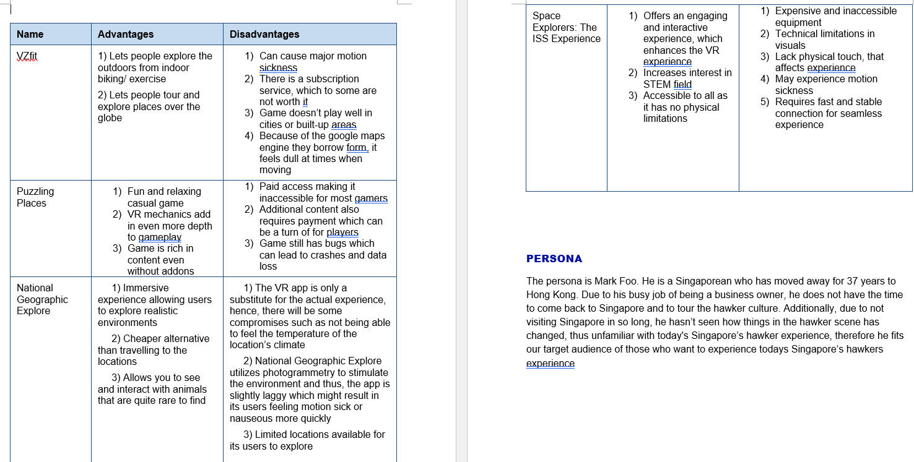
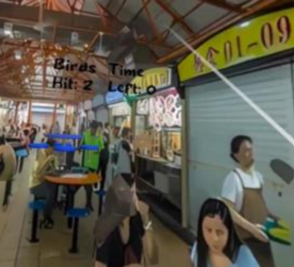

Relavent Links
Click here to see the full proposal
Click here to see the website for the project
Click here to see the prototype in figma
Click here to see the UI for the project drawn by me
Roles taken in this Project
- UI/UX designer/researcher/documentor
- Usability tester
- Created Figma Prototype
- Main developer
- Main Firebase Coder
- 3D Environment Design
- Modeling of booth idea and the quiz system
- Group Leader
- Video Editor
What is HEVR?
Partnering with the company "HelloHolo", The Virtual Hawker Experience is an innovative VR app designed to immerse its users in the vibrant world of hawker culture, a cornerstone of culture traditions in many regions, combined into one location, a hawker center which belong Singapore. The VR game, made in unity, offers a unique educational experience into the hawker culture as well as a brief introduction to some of Singapore’s most iconic local dishes through interactive gameplay elements such as the quirky tradition of ‘choping’ tables in HEVR hawker centers and ordering dishes like a local. This approach is designed to appeal to players who are passionate about food or those interested in Singapore’s local dishes, encouraging them to visit Singapore and explore a real hawker center in person. This game is made to play on the oculus quest 2 and the game was created in unity 2022.3.11f1 with android installed into the version.
Background
The project revolves around Singapore’s beloved hawker culture, recently honored as "Singapore's first element on the UNESCO Representative List of the Intangible Cultural Heritage of Humanity" (National Heritage Board, 2021). Hawker centers, integral to Singaporean life, draw interest from foreigners eager learn about its culture. However, due to constraints like hectic schedules, travel costs, or distance often make it so people are unable to visit. Likewise, some Singaporeans abroad often miss the hawker center memories from home.
The choice of Virtual Reality (VR) as the medium for this project stems from its ability to provide a realistic and immersive representation of hawker centers. Research on virtual reality in education and training has found that spatial presence, the perception that the body is inside a mediated environment, increases engagement (Ahn, S. J., Nowak, K. L., & Bailenson, J. N., 2021). Additionally, studies have shown that VR can elicit 27% higher emotional engagement compared to traditional media (Persolja, 2019), making it a powerful tool for connecting users emotionally with the content. These aspects of VR are particularly relevant to the project’s goals and objectives, which aim to inspire tourists and homesick Singaporeans to visit Singapore
In line with these insights, our project aims to create a VR experience that allows users to virtually step into the role of a hawker, providing an immersive insight into the culture and food. This experience is not just about showcasing Singapore's culinary delights but also about fostering an emotional connection that could incentivize potential visitors to travel to Singapore and experience its rich hawker culture firsthand.
If you would like to see the full documentation and proposal done by me, click the buttons on the left, or click here, as I will show a summarised version of my documentation/proposal.
Core Objectives
The goal is to let tourists learn and experience of what it's like being at a hawker center, such as buying and ordering food, and teaching them about Singapore food and trivia on it through a VR experience.
It is also to let home-sick Singaporeans to experience home from far away. If they enjoyed our project, it would incentivize those who tried it to travel over to Singapore to try doing so for themselves and to apply the knowledge that they had learnt
Target Audience
- Foreigners or tourists who are foodies and who are interested in learning about Singapore’s food culture
- Singaporeans who have moved away who feel homesick and miss the food and the hawker centers
- Those who had visited Singapore in the past, enjoyed Singapore and its hawker centers, and want to experience the feeling of going to one again
- Those who want to experience a distant culture but cannot visit due to being too far away, too busy, or unable to afford to travel to Singapore
Database/Firebase
On our main website, players can log in, view their position on the leaderboard, vote for their favourite mini games, talk to other plays on the message board, contact us and join our news letter.
Compeitive anaylysis
We performed a competitive analysis of games similar to what we had in mind, we did a competitive analysis of VZfit, Puzzling Places, National Geographic Explore and Space Explorers: The ISS Experience, which can all be seen in detail in the full proposal
Table of Summary of our findings( the full table can be seen in the proposal )
Design Rationale
For this example it shows why we picked Newton Circle food Center.
For this example it shows why I picked this color and how it is Color-blind inclusive and the design behind my UI. My ui can be seen here
Persona
The persona is Mark Foo. He is a Singaporean who has moved away for 37 years to Hong Kong. Due to his busy job of being a business owner, he does not have the time to come back to Singapore and to tour the hawker culture. Additionally, due to not visiting Singapore in so long, he hasn’t seen how things in the hawker scene has changed, thus unfamiliar with today's Singapore’s hawker experience, therefore he fits our target audience of those who want to experience todays Singapore’s hawkers experience
Empathy Map
Day in a life
HEART Map
Mind Map
Features
Chope Game
The chope game starts when you press the button, you have (insert amount of seconds), to get a table. This is to teach players how to reserve a table, which will especially be important when they visit Singapore and its very crowded. Additionally when they visit Singapore, they will
Once finding a table the score will be sent to the database, to show the players previous high score and so that their score is on the leaderboard. This can motivate players to replay the game and maybe get the idea of coming to Singapore more welcomed to them
Quiz Game
The quiz trivia, is to teach trivia to the players to learn facts about hawker centers, that can help them when they do visit Singapore. For example, teaching them that cash is king here in hawker centre, telling them how to take away their food, what the sauces and utensils are in front of the hawker stall, what buzzers are, whether to return your trays, and to learn about what cai fan is, which is important to the next bit. Players will need to hover to see the options, the models are visualized to make the quiz seem less dull and more on theme
Order Game
Here is when players learn how to order cai fan, they can pick one each category of what they want on their rice. This is to teach players how to order something in Singapore especially a common dish such as cai fan.
Buying drinks

Buying drinks in Singapore can tend to be hard since we have a “lingo” for it, thus it should be a priority to teach them the needed words or slang to order the drinks and to test them if they understand. All they need to do is type in the correct words and it will continue to the next section
Myna Catch
Myna bird is a popular bird in Singapore especially seen in at hawker centres. This is not only to teach players on one of our wild life that they may see when they visit here, but also to also be aware that birds may pry on their food while they are gone, so they need to be on alert. Myna catch is where you have to grab (shoo the birds away). Each myna you grab gets you points and these points are sent to the database, to show the players previous high score and so that their score is on the leaderboard. This can motivate players to replay the game and maybe get the idea of coming to Singapore more welcomed to them section
Tray return
Tray return is just to teach players on how to return their trays in the right category, so when they visit Singapore they do not make a wrong mistake. If they accidently return it to the halal side, they will be prompted that it is the wrong area to return it to.
User Journey
Prototype
The figma prototype, done by me, can be seen by clicking here.
Promotional Ideas
To help promote our VR experience, we plan to have a VR booth to be shown at a exhibition. Firstly when boothing, a common goal is to get leads, which can be helpful in the success of our project in the long run. At a exhibition, booths will attract a lot of attention from visitors and an article states that “Companies report a 33% (!) increase in generated leads from live events when using a VR Experience at the Brand’s booth.” (Persolja, 2019), with those statistics it means that by having a VR booth it could help us get more leads which as stated earlier can be helpful for our Projects success down the road in the future.
Secondly, by having the booth, our product, hawker culture, and Singapore will be in the spotlight, where many people at the exhibition wants to try anything VR related since its new and interesting, and thus many people will crowd around to try it, and thus learn more about our game and Singapore.
Competitive analysis for VR Booths
We performed competitive analysis for booths, so we could learn something from them. ( We performed even more research which can be found in the full proposal )
Final Booth
Design Rationale

Here you can see my design rationale, for example in the image explaining the design of the big signs/posters and branding of ( full rationale can be found in the full proposal )
Measurements
I gave an estimate on the rough size of our proposed booth( full measurements can be found in the full proposal )
Initial sketch
This is initial sktech which I had drawn